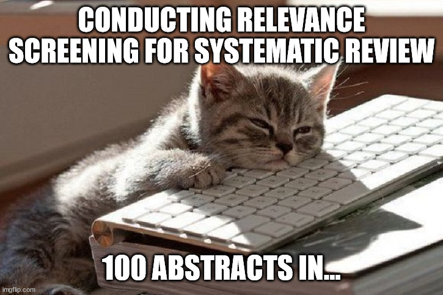

A structured, reliable, and transparent approach is needed to select articles for inclusion in a systematic review. The first step is selecting from the references identified in the search is to conduct a formal relevance screening of the titles and abstracts. A second level of screening can be conducted if needed following this on the full-text articles, or an article characterization stage that confirms relevance and extracts study details.

Multiple reviewers
The relevance screening, article characterization, data extraction, and risk-of-bias assessment steps should be conducted by two independent reviewers to reduce bias and the chance of human errors.
4.1 Relevance Screening
A relevance screening form should be developed, pilot tested, and included in the review protocol. It is easiest and most straightforward for this to contain only one key question if possible to streamline the process. The form should explicitly identify the eligibility criteria and any key definitions. An example from Young et al. (2019) is shown below:
Relevance Screening Form Example
4.1.1 Pilot Testing
The relevance screening form should be pilot tested before use to ensure the eligibility and inclusion decisions are valid and reliable. The recommended process is as follows:
Purposively select a small number of abstracts for pre-testing (e.g, 30-50) to ensure the sample includes those known to be relevant, not relevant, and potentially relevant
Each reviewer assesses each abstract using the form and records their results
Assess agreement in the pilot test using the kappa statistic
A kappa of >0.8 is often recommended for “almost perfect agreement” (e.g, Sim and Wright 2005)
Kappa Agreement Example
We will simulate reviewer inclusion/exclusion (i.e., yes/no) ratings for a sample of 30 abstracts. Assume that Reviewer 1 included 50% pf the abstracts, including two that Reviewer 2 did not include. Assume Reviewer 2 included 16 abstracts, including three of the abstracts that Reviewer 1 did not include.
Code
# Create simulated rating datareviewer1 <-rep(0:1, each =15)reviewer2 <-c(rep(0, times =12), rep(1, times =16), rep(0, times =2))# Bind the two dataframes togetherrs_test <-cbind(reviewer1, reviewer2)rs_test
The agreement is moderate, and below an ideal level of 0.8 or higher.
What happens if we re-run the simulation but this time each reviewer only differs by one abstract each (i.e., there are only two conflicts)?
Code
# Create the new simulated rating datareviewer1 <-c(rep(0, times =15), rep(1, times =15))reviewer2 <-c(rep(0, times =14), rep(1, times =15), rep(0, times =1))rs_test <-cbind(reviewer1, reviewer2)kappa2(rs_test)
This is now an acceptable level of reviewer disagreement.
4.1.2 Systematic Review Management Software
Systematic management programs, such as Covidence, automatically calculate a kappa agreement statistic, along with other inter-rater reliability measures. The relevance screening form in Covidence defaults to having three options: yes, no, or maybe. Answers of maybe are considered the same as yes for screening and inter-rated reliability calculation purposes. For Covidence, a CSV file can be downloaded to show the screening reliability statistics for each pair of reviewers. An example of this output is shown in the figure below.
4.1.3 Machine Learning for Relevance Screening
Many systematic management programs have implemented or are developing machine learning tools to semi-automate the relevance screening process. The tools work by prioritizing the abstracts that are most likely to be included (screening prioritization), and suggesting a percentage that can be “safely” excluded (screening truncation), which can both enhance review efficiency. The screening truncation process usually uses a stopping rule or threshold, such as 95% estimated recall, after which point the review team can decide not to review the remaining references or to use a modified process (e.g., only one reviewer).
These tools requires careful training and pilot testing on a subset of abstracts (e.g., 2% of total abstracts) to ensure the algorithm can make more accurate predictions. Research has shown that such machine learning tools can perform with high accuracy and reliability, and can result in substantial time savings for review teams (C. Hamel et al. 2020; Tsou et al. 2020). Recent guidance is available for reviewers who are interested to adopt these tools in their review (Candyce Hamel et al. 2021).
Following relevance screening, full-text PDFs should be obtained for all references considered relevant. These can be saved to a folder and uploaded/linked to the applicable reference IDs in the systematic review management program used.
Finding Articles
You should be able to identify most PDFs using a combination of simple Google Searching (for open-access papers) and the TMU scholarly paper search feature.
Occasionally, you may need to search for TMU access to the specific journal of interest, then search for the paper in specific databases if the global search does not find the paper(s) you need.
In cases where you cannot find the paper via these methods, you can ask the librarian for assistance, or make a special request for the paper through the Interlibrary Loan Service: RACER.
4.3 Article Characterization
It is often useful to include a separate screening confirmation (sometimes referred to as second-level screening) step and an article characterization step (i.e., data charting). The relevance confirmation step can be used to exclude irrelevant papers, which can be combined with article characterization to subsequently extract key characteristics of the relevant articles. This step is sometimes combined with data extraction, where study outcomes are also extracted. The confirmation of relevance should include a checkbox to indicate the primary reason for exclusion for articles that are not relevant.
The data captured in this form should be summarized in a characteristics of included studies table in the review results. Additionally, some of the variables captured in this form may also be used in the analysis (e.g., subgroup analysis or meta-regression). Some frequently important variables to capture include:
Document type, year of publication, language
Study design
Study dates and location(s)
Recruitment and sampling methods
Characteristics of participants (e.g., age, gender)
Characteristics of the intervention or exposure (e.g., dose, length, how they were measured)
Characteristics of the control or comparison group (if applicable)
Types of outcomes measured and how they were measured
It is often useful to develop outlines of the anticipated figures and tables that you plan to include in the results section of your systematic review. This will help you to decide on which important characteristics to extract.
Multiple reports of the same study
It is sometimes the case that the same study is reported in multiple publications. In the case of authors splitting results of a study across multiple journal papers, it might be easiest to treat these as separate studies at this stage and note that they are from the same larger study. In cases where preliminary data are published in a thesis or abstract, usually you will want to keep only the published journal article as the main source for that study.
4.3.1 Pilot Testing
It is also important to pilot test the article characterization form. Usually this can be done on a small selection of articles (e.g., 5-10). Instead of checking kappa agreement, you should compare reviewer answers, look for discrepancies in interpretation of questions, discuss, and modify the form to enhance its clarify and ensure consistent interpretation.
Article Characterization Exercise
Use the example article characterization form from Young et al. (2019) to extract data from the three full-text articles captured and screened as potentially relevant in that review]. Then record your answers for discussion.
Hamel, Candyce, Mona Hersi, Shannon E. Kelly, Andrea C. Tricco, Sharon Straus, George Wells, Ba’Pham, and Brian Hutton. 2021. “Guidance for Using Artificial Intelligence for Title and Abstract Screening While Conducting Knowledge Syntheses.”BMC Medical Research Methodology 21 (1): 285. https://doi.org/10.1186/s12874-021-01451-2.
Hamel, C., S. E. Kelly, K. Thavorn, D. B. Rice, G. A. Wells, and B. Hutton. 2020. “An Evaluation of DistillerSR’s Machine Learning-Based Prioritization Tool for Title/Abstract Screening – Impact on Reviewer-Relevant Outcomes.”BMC Medical Research Methodology 20 (1): 256. https://doi.org/10.1186/s12874-020-01129-1.
Sim, Julius, and Chris C Wright. 2005. “The Kappa Statistic in Reliability Studies: Use, Interpretation, and Sample Size Requirements.”Physical Therapy 85 (3): 257–68. https://doi.org/10.1093/ptj/85.3.257.
Tsou, Amy Y., Jonathan R. Treadwell, Eileen Erinoff, and Karen Schoelles. 2020. “Machine Learning for Screening Prioritization in Systematic Reviews: Comparative Performance of Abstrackr and EPPI-Reviewer.”Systematic Reviews 9 (1): 73. https://doi.org/10.1186/s13643-020-01324-7.
Young, Ian, Judy Greig, Barbara J. Wilhelm, and Lisa A. Waddell. 2019. “Effectiveness of Food Handler Training and Education Interventions: A Systematic Review and Meta-Analysis.”Journal of Food Protection 82 (10): 1714–28. https://doi.org/10.4315/0362-028X.JFP-19-108.